자료실 008
클로드 무료 계정에 내 캘린더·드라이브·지메일·카톡 연결하기
MCP(클로드에선 「커넥터」)로 AI를 채팅창 밖으로 꺼내는 법이에요. 영상에서 한 그대로 — 어디를 누르는지, 무엇을 허용하는지, 붙여 넣을 문장, 이렇게 되면 성공, 막힐 때까지 한 장에 모았어요.
- 아래 목록에서 연결해 보고 싶은 앱을 누르세요. 처음이면 구글 캘린더 하나만 추천해요.
- 「순서」대로 연결하고, 권한 고르는 화면에선 필요한 것만 체크하세요.
- 회색 상자의 문장을 「복사하기」 → 클로드 채팅창에 붙여 넣기 → 「이렇게 되면 성공」과 비교.
1 · 구글 캘린더
무료 · 처음 하나만 해 본다면 이것 · 일정 정리, 빈 시간 찾기
순서
- 커넥터 검색 「Google Calendar」 → 오른쪽 위 Claude에 연결
- 구글 로그인 창 → 계정 고르기 → 계속
- 권한 고르기: 정리만 시킬 거면 위의 두 개(일정 보기 · 확인 및 다운로드)만 체크 → 계속
- 클로드 화면에 「연결됨」이 뜨면 끝 (1분 정도)
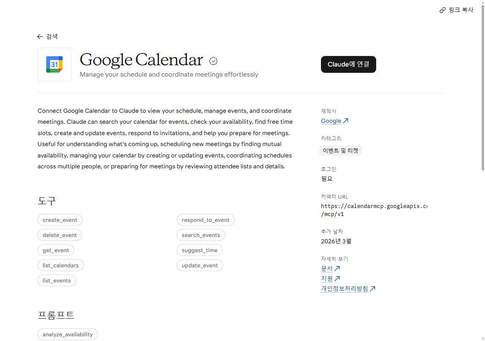
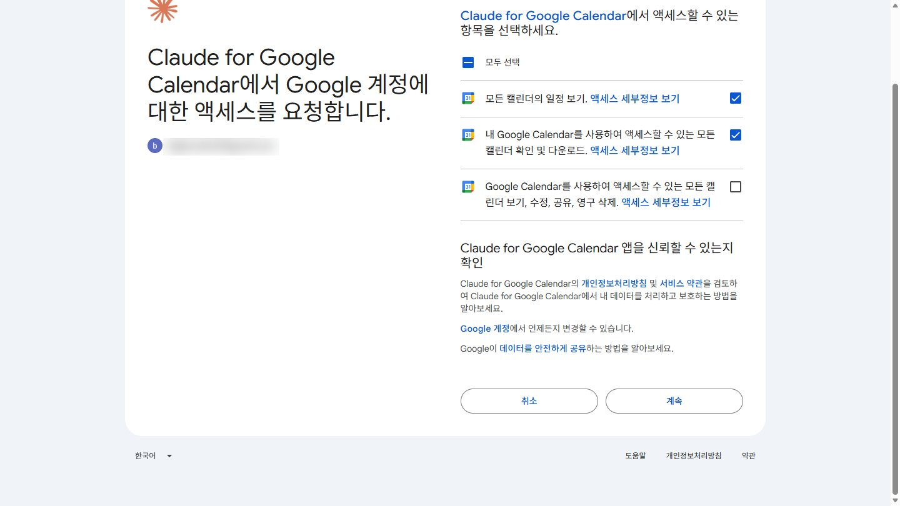
오늘부터 일주일 내 일정 정리하고, 비어 있는 시간 찾아 줘.
다음 주 평일 오전 10시부터 오후 7시 사이에서, 2시간 이상 비는 시간만 골라 줘.
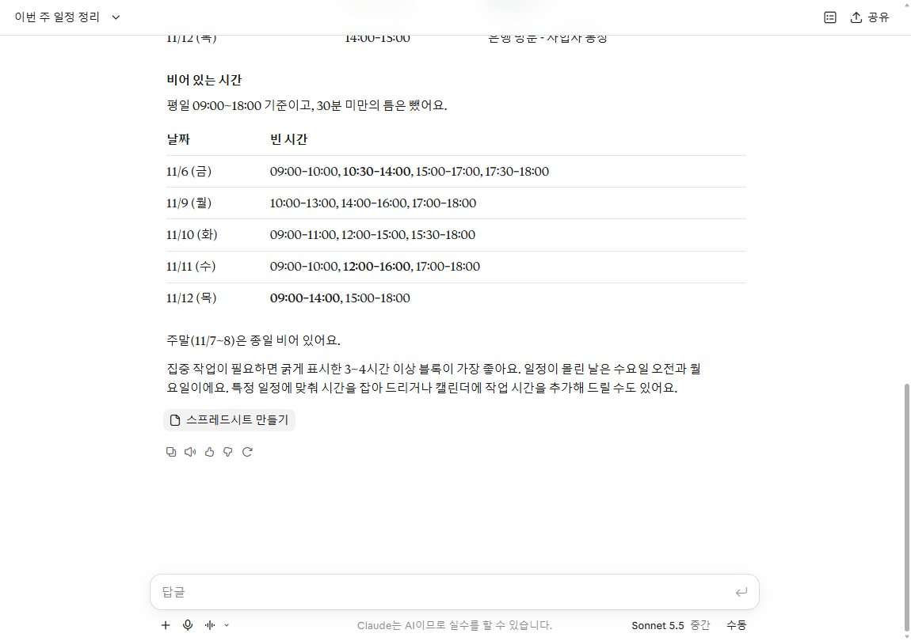
2 · 구글 드라이브
무료 · 파일 이름을 몰라도 「무슨 파일인지」만 말하면 찾아와요
순서
- 커넥터 검색 「Google Drive」 → Claude에 연결 → 계정 → 계속
- 권한: Google Drive 파일 보기 및 다운로드 하나만 체크 → 계속
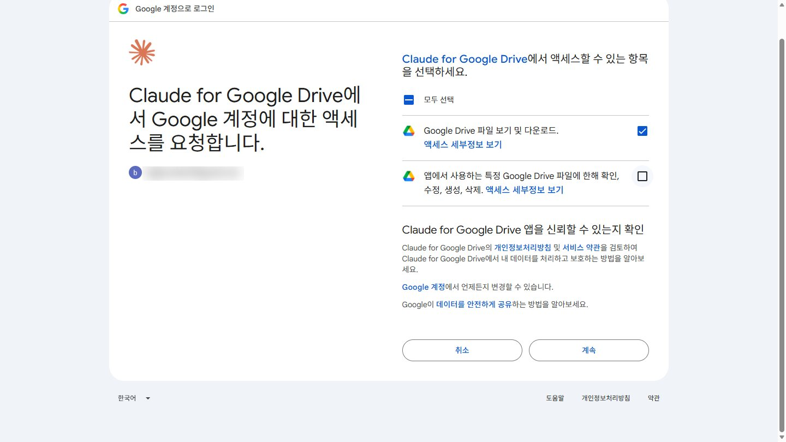
드라이브에서 포장재 견적서 두 개 찾아서, 달라진 금액만 표로 정리해 줘.
드라이브에서 가장 최근 회의록을 찾아서, 사람별 할 일과 마감일만 표로 정리해 줘.
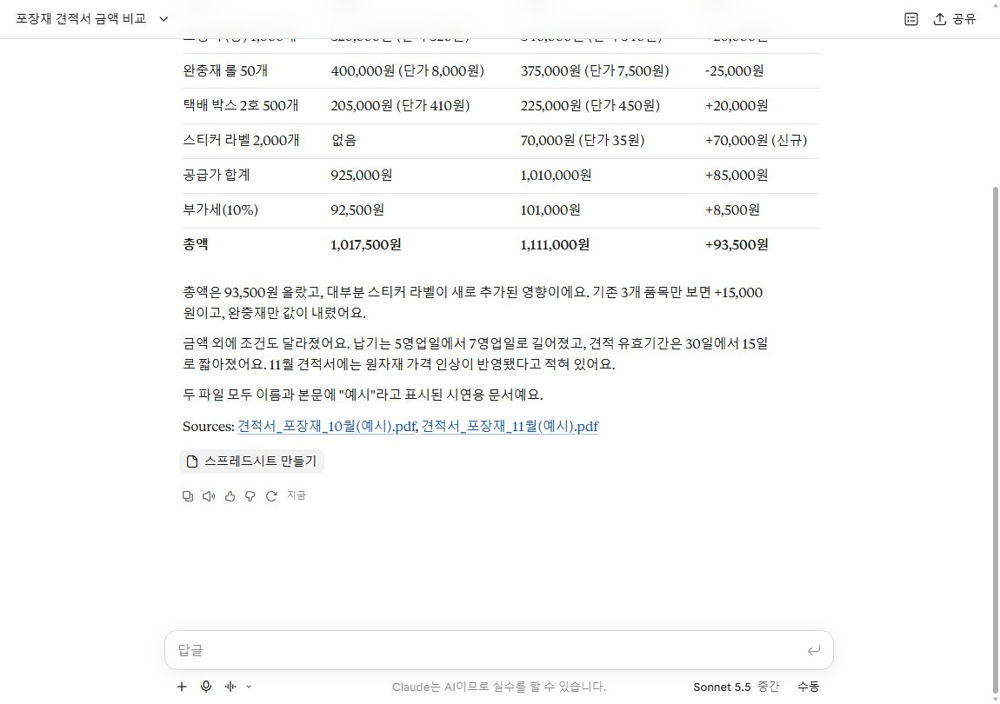
3 · 지메일
무료 · 메일 초안까지 · 보내기는 내가
순서
- 커넥터 검색 「Gmail」 → Claude에 연결 → 계정 → 계속
- 권한: 이메일 메시지 및 설정 보기 + 임시보관 메일 관리 및 이메일 전송 체크 → 계속
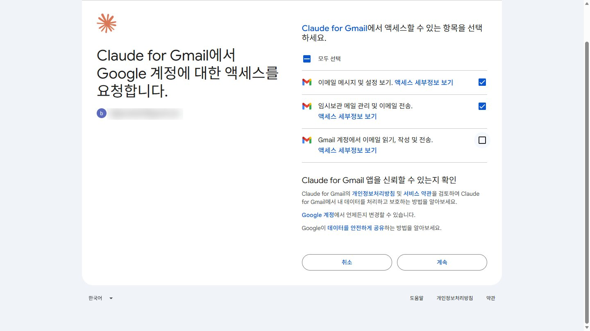
드라이브의 겨울 신상 회의록을 보고, 거래처에 단가 재협상 메일 초안을 임시보관함에 써 줘. 보내지는 말고.
오늘 받은 메일 중에 답장이 필요한 것만 골라서 세 줄씩 요약해 줘. 답장 초안은 임시보관함에만 넣고, 보내지는 말고.
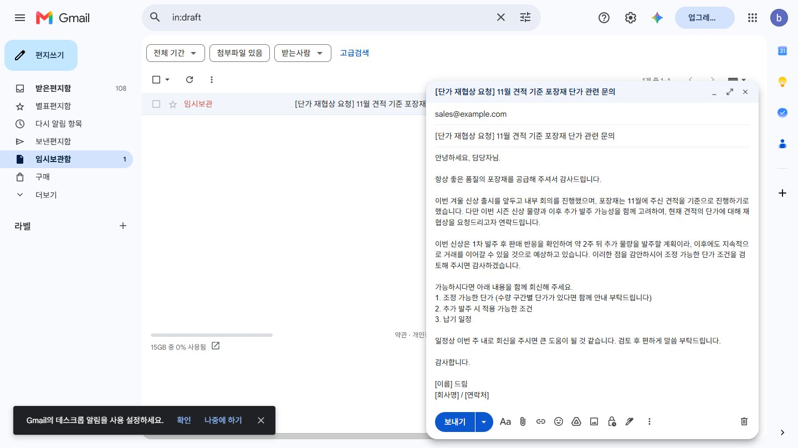
4 · 카톡 — 카카오 PlayMCP
클로드 쪽 무료 · 목록에 없어서 「커스텀 커넥터」로 직접 붙여요 · 카카오 계정 필요
순서
- playmcp.kakao.com → 카카오 계정으로 로그인
- 원하는 도구를 도구함에 담기 (영상: 「카카오톡 나챗방」 = 나와의 채팅방으로 보내기)
- 도구함 오른쪽 도구함 URL → 복사하기
- 클로드 커넥터 화면 오른쪽 위 추가 → 커스텀 커넥터 추가 → 이름(아무거나) + 주소 붙여 넣기 → 계속
- 다음 화면은 전부 「감지됨」 — 손대지 말고 추가 → 연결
- 카카오 동의 화면(계정 확인 · 도구함 목록 확인 · 도구 호출) → 모두 동의 후 계속하기
https://playmcp.kakao.com/mcp
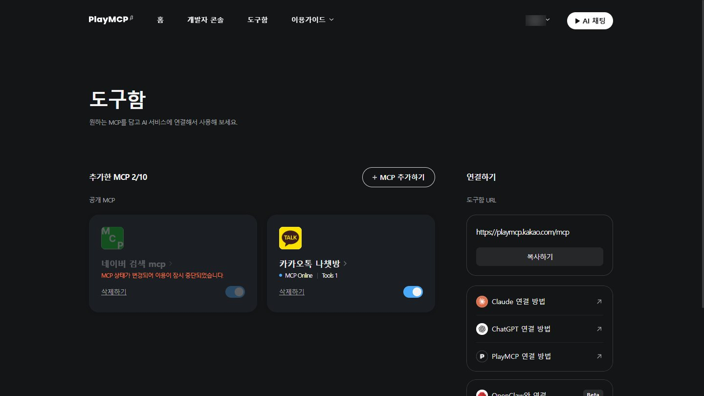
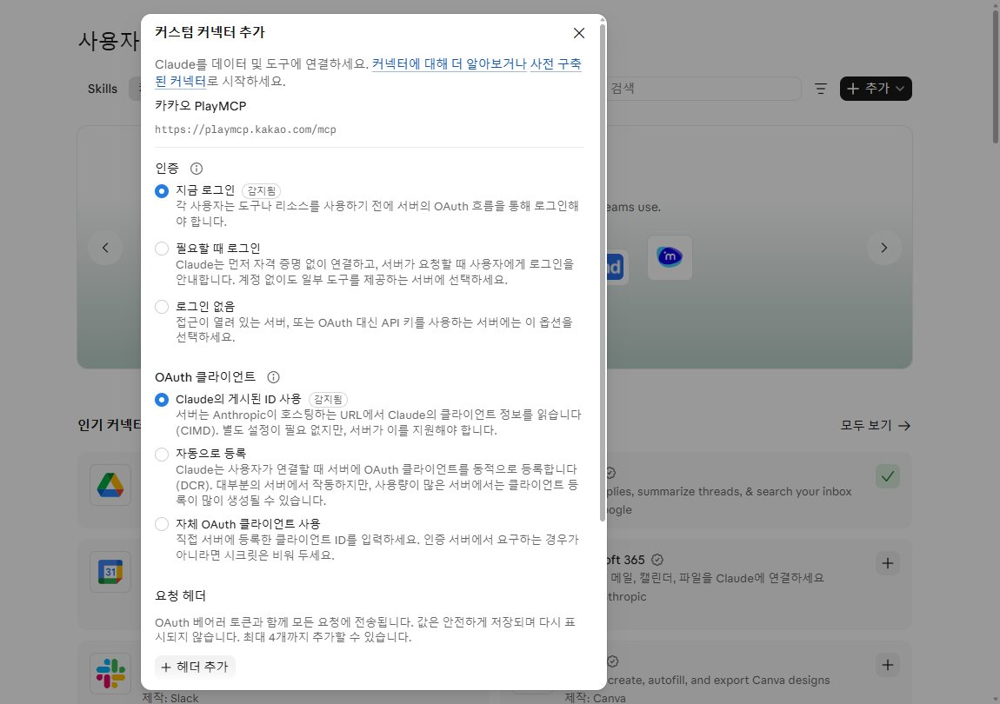
내일 일정이랑, 드라이브 회의록에 있는 할 일을 세 줄로 정리해서 카톡 나와의 채팅방으로 보내 줘.
오늘 일정이랑 오늘 마감인 할 일만 세 줄로 정리해서 카톡 나와의 채팅방으로 보내 줘.
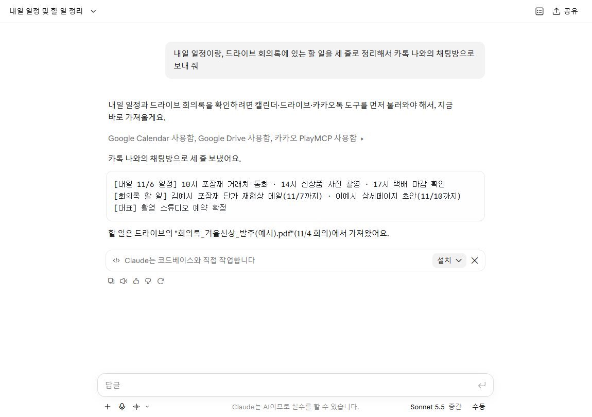
안전하게 쓰는 법 · 끊는 법
연결 = 권한이에요. 은행 앱까지 다 연결할 필요는 없어요
- 믿을 수 있는 곳만 · 공식 목록에 있는 앱, 카카오처럼 회사가 직접 만든 곳만. 커스텀 커넥터 화면에도 「신뢰할 수 있는 개발자의 커넥터만 사용하세요」라고 적혀 있어요.
- 필요한 권한만 · 권한 고르는 화면에서 보기만 할 거면 보기만. 영상에선 캘린더·드라이브를 보는 권한만으로 다 했어요.
- 되돌리기 어려운 일은 초안까지 · 보내기·지우기는 「보내지는 말고」처럼 막아 두고, 허용 창이 뜨면 「한 번 허용」으로 하나씩 보고 누르세요.
끊는 법
- 클로드 사용자 지정 → 커넥터 → 내 항목 → 앱 누르기 → 연결 해제
- 카카오는 PlayMCP 쪽 「연결된 서비스」에서도 클로드 권한을 지우면 깔끔해요
- 구글 쪽은 구글 계정 → 보안 → 연결된 앱에서도 지울 수 있어요
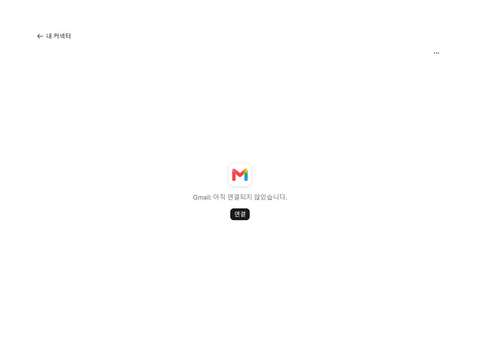
정말 무료로 되나요?
영상의 네 가지 모두 2026년 11월 5일 클로드 무료 계정으로 직접 했어요. 무료는 하루 사용량에 한도가 있어 길게 많이 시키면 쉬었다 하라고 나와요(녹화 중엔 한 번도 안 걸렸어요). 커스텀 커넥터를 여러 개 쓰고 싶으면 Pro(월 20달러부터, 연간 결제 시 월 17달러)를 생각해 보세요.
MCP가 뭐예요? 커넥터랑 달라요?
AI가 내 앱을 직접 열어 볼 수 있게 해 주는 연결 규칙이에요. 앤트로픽이 2024년 11월에 공개했고, 지금은 오픈AI·구글도 써요. 클로드에선 「커넥터」, 챗GPT에선 「플러그인」이라고 불러요 — 이름만 달라요.
챗GPT·제미나이에서도 돼요?
챗GPT 무료 계정에도 왼쪽 「플러그인」 메뉴가 있고, 구글 캘린더·지메일·드라이브·노션이 보이며 「플러그인 설치」 버튼이 떠요(11월 5일 화면 확인). 카톡처럼 목록에 없는 걸 직접 붙이는 건 찾아본 자료상 무료에선 안 된다고 나와요(직접 확인은 못 함). 제미나이는 구글 자기 앱끼리는 잘 붙지만, 다른 앱을 직접 붙이는 기능은 지금 미국·영어로만 열려 있어요.
회사 계정에서도 돼요?
기술적으로는 돼요. 하지만 회사 메일·파일을 밖의 AI에 연결해도 되는지는 회사마다 규칙이 달라요. 꼭 먼저 물어보세요. 영상은 예시 계정·예시 파일로만 했어요.
권한을 잘못 줬어요.
사용자 지정 → 커넥터 → 내 항목에서 연결 해제하고 다시 연결하면, 권한 고르는 화면이 다시 나와요.
카톡이 안 와요.
클로드 답에 「카카오 PlayMCP 사용함」이 있는지 보세요. 없으면 커넥터가 꺼져 있거나 연결이 풀린 거예요. 보내는 곳은 PlayMCP에 로그인한 카카오 계정의 「나와의 채팅방」이에요.
| 무엇 | 무료 계정 |
|---|---|
| 클로드 공식 목록 커넥터(캘린더·드라이브·지메일 등) | 됨 — 영상에서 직접 |
| 클로드 커스텀 커넥터(PlayMCP 카톡) | 됨 — 공식 안내상 1개까지 |
| 챗GPT 플러그인(목록 앱) | 설치 버튼 보임(연결은 안 해 봄) |
| 챗GPT 직접 추가(MCP 주소) | 자료상 안 됨(확인 못 함) |
| 제미나이 다른 앱 직접 추가 | 미국·영어만 |
- 클로드 커넥터: support.claude.com — Use connectors
- 클로드 커스텀 커넥터: support.claude.com — Custom connectors
- 클로드 요금: claude.com/pricing
- MCP 발표(2024-11): anthropic.com/news/model-context-protocol
- MCP 기부·1만 개+(2025-12): Linux Foundation 발표
- 카카오 PlayMCP: 베타 오픈(2025-08) · 도구함 기능(2025-11)
- 제미나이 앱 연결: support.google.com/gemini/answer/17209137